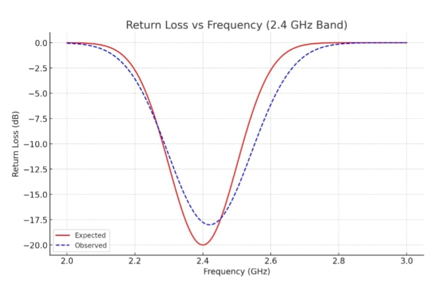
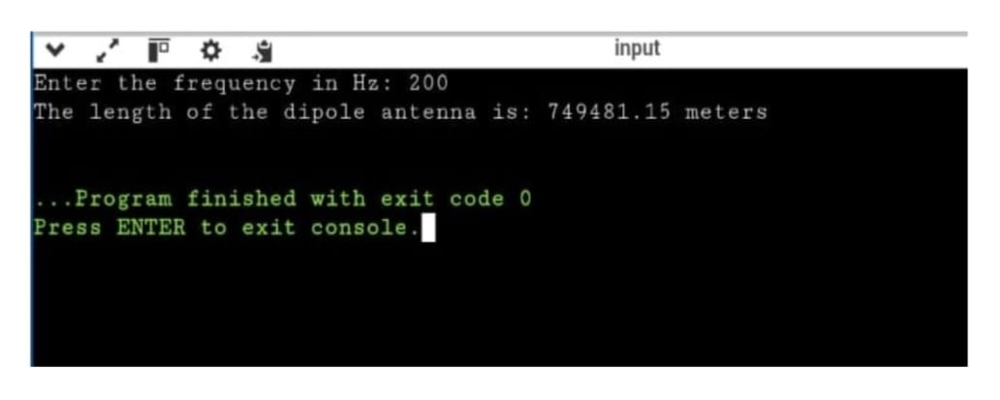
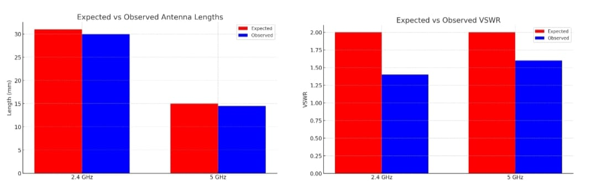
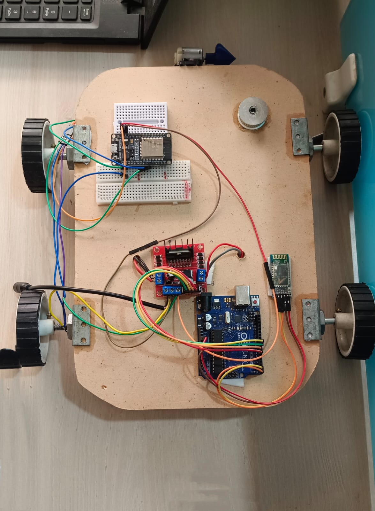
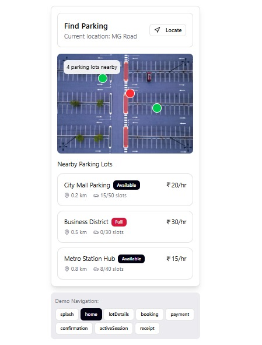

Hello! I’m Arbiya, a final-year Software Engineering student at VTU. This is my personal portfolio where I showcase my projects, skills, and achievements.
I am passionate about coding, project management, and building efficient solutions. Currently, I’m exploring practical applications of AI tools and working on Python-based assignments and projects.
Created a specialized antenna to boost Wi-Fi signal strength and range. Focused on RF propagation analysis, reducing interference, and optimizing performance through simulation before prototyping.
Tools: CST/HFSS, RF Analyzers, Prototyping kits
Learning Outcome: Mastered RF optimization techniques to minimize signal loss and maximize coverage.
Automated the agricultural process of planting seeds using autonomous or remote control. Integrated mechanical wheel and drilling system with microcontrollers for precise movement.
Tools: Arduino/ESP8266, DC Motors, Sensors
Learning Outcome: Developed practical skills in hardware integration and mechanical automation.
Designed a digital interface to manage and allocate parking spaces efficiently. Created a user-friendly flow to help drivers locate and reserve spots in real-time.
Tools: Figma
Learning Outcome: Acquired proficiency in UI/UX design principles and interactive prototyping.
You can download my resume here:
Download ResumeIf you’d like to get in touch, feel free to reach out:
Created a specialized antenna to boost Wi-Fi signal strength and range. Focused on RF propagation analysis, reducing interference, and optimizing performance through simulation before prototyping.
Tools: CST/HFSS, RF Analyzers, Prototyping kits



Learning Outcome: Mastered RF optimization techniques to minimize signal loss and maximize coverage.
Automated the agricultural process of planting seeds using autonomous or remote control. Integrated mechanical wheel and drilling system with microcontrollers for precise movement.
Tools: Arduino/ESP8266, DC Motors, Sensors

Learning Outcome: Developed practical skills in hardware integration and mechanical automation.
Designed a digital interface to manage and allocate parking spaces efficiently. Created a user-friendly flow to help drivers locate and reserve spots in real-time.
Tools: Figma

Learning Outcome: Acquired proficiency in UI/UX design principles and interactive prototyping.